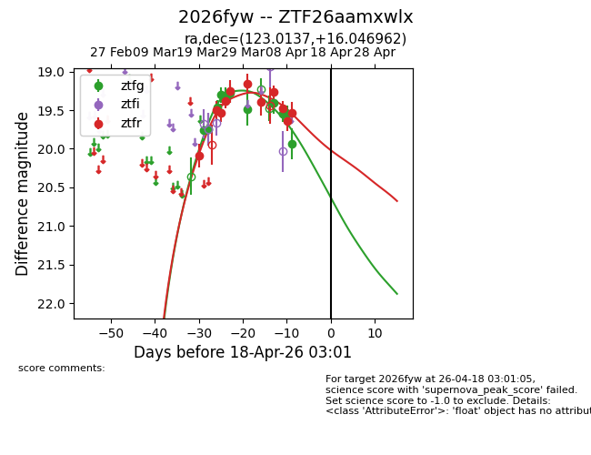
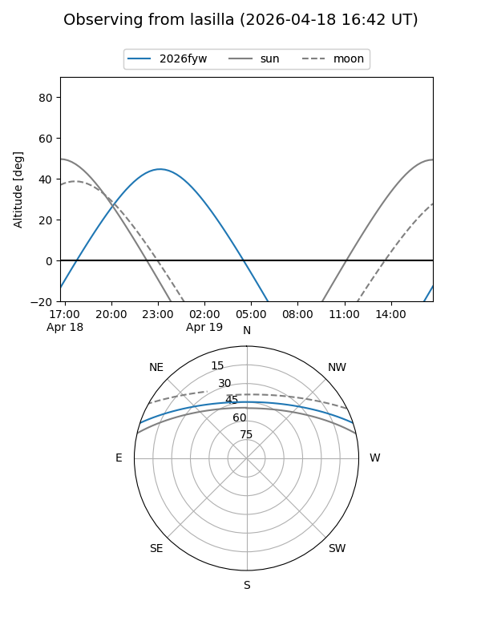
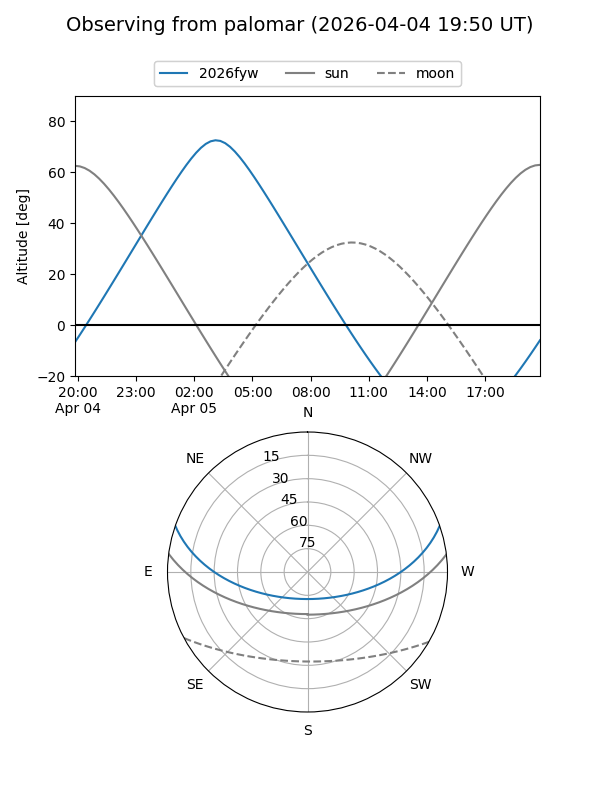
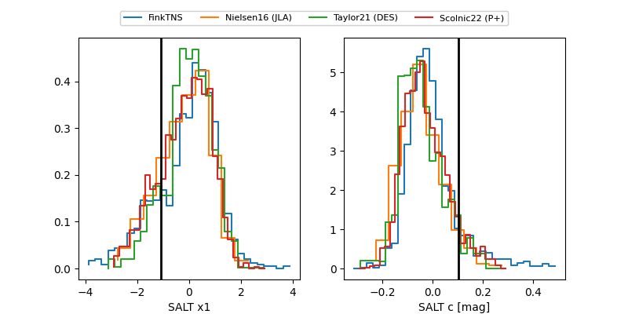

2026fyw
Target 2026fyw at 2026-04-18 03:06
Aliases and brokers:
FINK: link
Lasair: link
ALeRCE: link
TNS: link
YSE: link
alt names
ZTF26aamxwlx (ztf,fink_ztf)
2026fyw (tns,yse)
Coordinates:
equatorial (ra, dec) = 123.0137,+16.04696
equatorial (HMS+DMS) = 08:12:03.30,+16:02:49.06
galactic (l, b) = (206.9191,+24.88141)
Flags:
Photometry:
last ztfg=19.94, ztfr=19.54
11 ztfg, 11 ztfr detections
Lightcurve

Visibility


Additional plots
